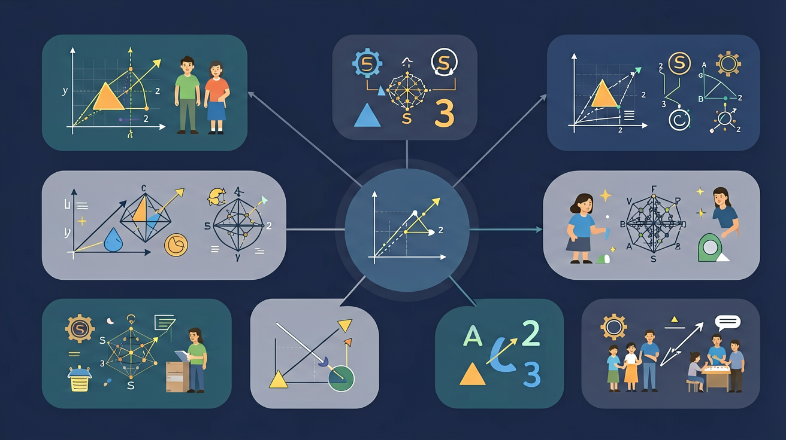

❓ 为什么抽奖时一等奖最难抽到？
❓ 天气预报说降水概率80%一定会下雨吗？
❓ 玩游戏时骰子怎么扔才能赢更多？
学完这一课，这些问题你都能自信地回答。
🎯 能说出事件发生的可能性大小（必然、可能、不可能）
🎯 能判断简单游戏的公平性并设计公平规则
🎯 能计算简单事件发生的概率（分数表示）

在学习新内容之前，先测测你的基础知识！
Q1：掷骰子，出现7点的可能性是？
Q2："太阳从东边升起"的可能性是？
可能性描述一个事件发生的可能程度。
例：掷骰子出现"3"的可能性 = 1/6
袋中3红2蓝，摸出红球概率 = 3/5
52张牌中摸出A的概率 = 4/52
降雨概率60% 表示10次中约6次下雨
| 情景 | 有利结果 | 总结果 | 可能性 |
|---|---|---|---|
| 掷骰子出1 | 1 | 6 | 1/6 ≈ 17% |
| 掷骰子出奇数 | 3 | 6 | 1/2 = 50% |
| 掷骰子出≤4 | 4 | 6 | 2/3 ≈ 67% |
| 掷骰子出≤6 | 6 | 6 | 1 = 100% |
拖动滑块调整各色球数量，观察可能性变化
点击旋转，看指针落在哪里
可能性与概率已掌握！
完成学习后，用这两道题检验你的掌握程度！
Q1：袋中有3个红球2个蓝球，随机摸一个是红球的可能性大还是蓝球大？
Q2：可能性用分数表示，0到1之间，1代表什么？
记忆口诀：不可能=0，一定发生=1，可能发生在0到1之间。助记：可能性越接近1越"有把握"，越接近0越"没希望"。口诀："确定事件等于一，不可能事件等于零，其余事件在中间。"
⚠️ 如果你做错了，看看错在哪里：
如果你认为"可能性大就一定会发生"，你混淆了可能性和确定性。可能性=1才是"一定发生"；即使可能性很大（如0.9），也有10%的概率不发生。
💡 自查方法：把答案代回原题验证，如果算出矛盾就说明中间有错误！
从记忆→理解→应用→分析，逐步深化你的理解！
📌 记忆层（识别）：选出下面哪个是可能性的正确说法：
分析：一个袋中有5个红球和5个白球，摸球结果为什么不确定？
🔍 理解层（解释）：用自己的话解释概念，并比较区别
评估：掷硬币100次，正面出现60次，说明可能性大于1/2吗？
⚡ 分析层（判断）：判断以下说法是否正确，并说明理由
💡 背后的原理
🔍 本质：可能性（概率）衡量不确定性。大数定律：试验次数越多，频率越接近真实概率。生活中的保险、天气预报、彩票都基于概率理论。
先独立作答，再点选项查看对错与错因。
随机抽一个球，抽中红球的概率是
若增加3个红球，此时抽中非红球的概率是
下列说法正确的是
要使抽中蓝球和黄球的可能性相同，需要再放入____个黄球
答案：3
现有蓝球8个，黄球5个，8-5=3
连续抽两次球（每次放回），两次都是蓝球的概率是____
答案：64/625
单次概率8/25，(8/25)×(8/25)=64/625
关于"可能性"的理解正确的是
现有奖券30张，需设置一/二/三等奖，要求一等奖概率≤10%，二等奖概率≈30%
✅ 强调'可能'包含从1%到99%的所有情况
💡 日常用语与数学术语混淆
✅ 用列表法或树状图穷举所有情况
💡 思维不全面